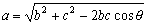

餘弦定律(I)
若已知兩邊及夾角 (2 sides and included angle)， 程式可以計算第三邊。

例題1: a=4, b=5, ∠C=40o ，求c。
注意: 要在DEG Mode執行
按 2 FMLA 再按 4 RUN 5 RUN 40 RUN (顯示答案為c=3.2184)
註1: 程式執行完結後，按 Kout 4 顯示計算答案。
註2: 以下的程式可輔助或補足這個內置功能的不足之處。
餘弦定律(II) (Cosine laws II)
餘弦定律(III) (Cosine laws III)